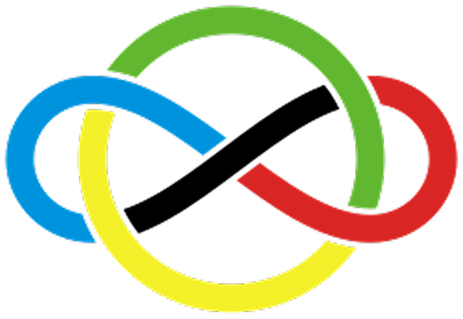
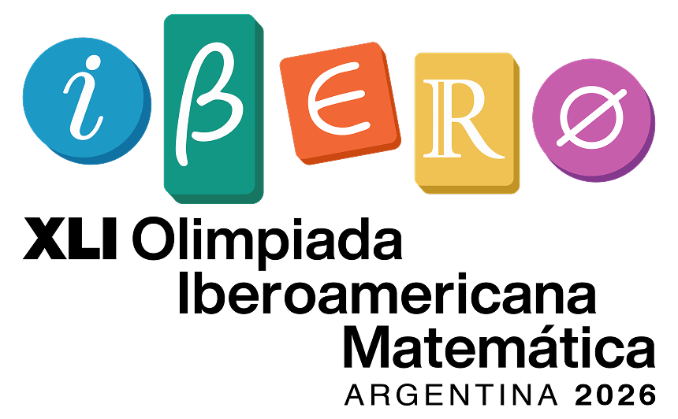

Primeros años
Participé en las competencias Ñandú de 5to a 7mo grados de primaria. Aunque siempre llegué a la final, no pude vivir la experiencia completa al haber sufrido la pandemia en 6to y 7mo. Aun así, logré conseguir una mención en la ronda nacional y en algunas metropolitanas.
También participé en mateclubes, la competencia en equipos.
Primer año en OMA
Al pasar a la secundaria, di mi primer salto, por primera vez, gane la ronda metropolitana, que incluye a todo el Gran Buenos Aires.
Fue una sorpresa para mi, porque no había logrado sacar más que una mención en competencias anteriores.
Ese mismo año, conseguí una mención especial en el nacional por primera vez.
Segundo y tercer año
Durante estos años, fui desarollando mi matemática. Volví a ganar las rondas metropolitanas de los 2 respectivos años. También conseguí menciones en rondas nacionales.
Además, esos años fueron mis primeros selectivos para clasificar a los internacionales. Aunque no clasifiqué, si obtuve menciones en ellos.
Cuarto año
Ese año, obtuve mi primera suplencia en un selectivo para internacionales. Con eso y las menciones, aproveché para poder ir a mis primeros entrenamientos para internacionales. Además de teoría pura, pude aprender técnicas ahí que me ayudaron más adelante.
Además, después de todos esos años, por fin quedé en el primer puesto nacional.
Con eso, obtuve mi clasificación a mi primer competencia internacional, la Olimpiada Matemática Rioplatense.
Río
Fue mi primera vez en una internacional. Aunque he rendido anteriores, eran competencias remotas y de un menor a esta. Fue mi primer olimpiada internacional presencial con un una clasificación reducida. Además, antes tuve otro entrenamiento más. Se hizo en San Isidro, aunque había gente de toda Sudamérica. Conseguí medalla de bronce, aunque lo más mejor fue el avance de estar ahí, y el poder conocer gente de muchos países con el mismo amor a la matemática.
Comienzos del quinto año
El año comenzó muy bien para mi, ya que, al fin, ¡clasifiqué a la IMO! La olimpiada internacional de matemática. En el selectivo quedé quinto de los 6 del equipo, lo que me dio

un nuevo viaje hasta Shanghai. Para eso, tuve un mes de entrenamiento en Ciudad Universitaria con el resto del equipo y con los suplentes.Viaje de la IMO
Luego del entrenamiento, por fin viajamos a Shanghai, China. Llegamos una semana antes de la competencia, así que aprovechamos para entrenar junto a las delegaciones de España, Bolivia, y Portugal.
Ya en la competencia, nos alojamos en la Shanghai High School. Pudimos conocer a participantes de todos los países y entablar relaciones. Además, pudimos visitar el centro de la ciudad, Disney, y el jardín botánico.
Examen de la IMO
Se dividió en 6 problemas, 2 cada día, y cada problema valía 7 puntos. En total, hice casi 3 problemas, sacando 19 puntos, lo que me valió una medalla de bronce, y la mayor puntuación del país este año.
Luego de la ceremonia, la ultima noche tuvimos juegos y espectáculos tradicionales chinos. Al irnos ya sabía que las 29 horas de vuelo habían valido la pena.
Ibero
Al regresar no tuve mucho descanso, poco después de las vacaciones de invierno, tuve el selectivo para la olimpiada iberoamericana de matemática. Al final del selectivo, logré

clasificar tercero de 4. Esta vez, tocaba acá en Buenos Aires, pero venía gente de todo Latinoamérica, España, y Portugal.Ibero
Ya para la competencia, nos alojaron en el hotel Conte, a 2 cuadras del obelisco. Entre los 2 días, logré completar 4 problemas y sacar puntos en los otros 2. Con un total de 31 puntos, ¡saqué medalla de oro!
Además de la competencia en si, tuvimos distintos paseos y juegos matemáticos. Eso me permitió conocer a otros chicos de muchos países distintos.
Fue una gran experiencia y una gran oportunidad vivir una competencia de tal importancia aquí en Buenos Aires.
Futuro
Ya me queda unicamente una ronda en estas competencias.
Voy a rendir mi última final nacional en la semana del 15 de noviembre.
Aunque no se que va a pasar, mantengo mis esperanzas en alto.